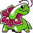

#154
Meganium
GrassFairy
Abilities: Serene Grace, Mega Sol, Triage
Base stats BST 535
HP80
Attack82
Defense100
Speed80
Sp. Atk93
Sp. Def100
Evolution
None detected.
Level-up learnset
LevelMoveType
Lv. 1Petal DanceGrass
Lv. 1GrowlNormal
Lv. 1TackleNormal
Lv. 1Earth PowerGround
Lv. 5Razor LeafGrass
Lv. 8PoisonpowderPoison
Lv. 11SynthesisGrass
Lv. 18Light ScreenPsychic
Lv. 18ReflectPsychic
Lv. 22Draining KissFairy
Lv. 26Energy BallGrass
Lv. 26Leech SeedGrass
Lv. 30Sweet ScentNormal
Lv. 32Petal DanceGrass
Lv. 35Body SlamNormal
Lv. 40MoonblastFairy
Lv. 45SafeguardNormal
Lv. 55SolarbeamGrass
Lv. 60Giga DrainGrass
Lv. 65Earth PowerGround
Wild locations
Not found in the parsed wild encounter tables.